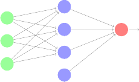

Machine Learning, Neural Networks and the evolution of Neural Networks through Augmenting Topologies
-
describing the underlying methods and the particular application of these principles to making a computer teach itself how to play a video game
by Maxim L. van den Berg, Sam R.W. van Kampen, Wilco M. Stam and Robin A.J. Wacanno
23-12-2016
Abstract
Lekker abstract
The automation algorithmic problem solving 2
History 2
Neural networks - a brief introduction 4
Examples of applications of Machine Learning and Neural Networks 4
Mathematical theory and model 4
Introduction and overview 4
Linear regression 5
Implementation in the programming language Octave 6
Mathematical theory and model 6
Implementation in the programming language Octave 6
Alternative algorithms to gradient descent 6
Self improving neural networks 6
The application of neural network based artificial intelligence to video games 6
Implementation in the programming language Octave 7
Choosing an emulator and transferring the program to the appropriate lan- guage 7
The set-up and time partition of the experiment 7
[after the experiment] Analysis of the data 7
(temporary titles)
Discuss why we chose the subject
Short introduction subject
Explain that we will assume the reader doesn’t really know anything about neural net- works yet.
Define what the reader should now already. For example: ”It is expected that basic matrix functions and basic programming syntax are understood.”
In the year 1950, computer scientist Alan Turing published a seminal paper in the philo- sophical magazine Mind. This publication proved an important step in the development of Machine Learning algorithms and Artificial Intelligence. In this paper Turing ponders the question whether machines are able to think. He does this by trying to rephrase the question, for a question such as “Can a machine think?” contains vague concepts. Con- cepts such as ‘think’ and ‘machine’, which are not clearly and universally definable.
Turing proposes that, instead of asking this question, one should seek to find out whether a machine is able to play the so called Imitation Game. In Turing’s version of this game, more commonly know as the Turing Test, there are three participants: a ma- chine, a human and a judge (also a human). Let us call these A, B and C respectively. Each of the participants are held in isolated rooms and participant C is only able to com- municate with participants A and B with a terminal, through which he is able to ask both of them questions. The aim of the game is for participant C to correctly identify whether participants A and B are human or machine. Participants A and B however, both try to convince participant C they are in fact human. Thus ‘think’ has been redefined as being able to act indistinguishably from an entity that, without a doubt, is able to think: a human.
Now, Turing has only solved half of the problem; he still has to come up with a way to unambiguously define the word ‘machine’. This is vital for there are a number of objects which could classify as a machine but would not be suitable to take this test. Turing has an answer to this however, for he thinks this theory should only apply to binary machines. According to him there are two important reasons for using these kinds of machines. For one, they are already available; their existence is not debatable. The second reason is based on one of his theories, which states that any binary or digital machine can simulate any other digital machine. This means that, if any digital machine is able to pass the Turing Test, all of these machine should—in theory—be able to pass the test.
Thus Turing is able to ask the following, more specific question: “Is there a conceivable computer D, one with the adequate amount of computing power and the right programme, that is able to play the Imitation Game as participant A against participant B—who is human—in such a way that judge C is unable to correctly determine whether participant A or B is the real human.”
In this way, the Turing Test has been used for decades to test the ‘intelligence’ of certain Machine Learning algorithms and Artificial Intelligences.
One year after Turing’s publication, Marvin Minsky finished building his Stochastic Neu- ral Analog Reinforcement Calculator, also know as SNARC. SNARC was a network of 40 randomly connected Hebb synapses. The SNARC was based on a model created by Warren McCulloch and Walter Pitts in 1943 wherein they proposed a model of artificial neurons where each neuron is characterized as being on or off, with a switch to *on oc- curring in response to stimulation by a sufficient number of neighboring neurons. With the addition of a rule that modifies the connection strength between neurons the network gains the ability to improve it’s performance. This rule is now called Hebbian Learning.
The SNARC consisted of 40 neurons connected randomly and each neuron consisted of a long term memory and a short term memory. The long term memory is the prob- ability that if a signal comes into on of the inputs that then a signal will come out of the output. This probability varies from 0—if the potentiometer is turned down—to 1—if the potentiometer is turned all the way up. If a signal gets through then the short term memory activates which consist of a capacitor and if the operator of the SNARC liked the outcome it could reward the neurons that fired by pressing a button that changed the probability of a neuron firing based on the state of the short term memory. The network achieves this by running a chain powered by a motor along all the potentiome- ters which turns the shaft of the potentiometers when the electric clutch is engaged. This only happens when the neuron has received a signal and thus the capacitor holds a charge.
History
Basic idea machine learning (fitting a formula to a dataset and such)
Supervised vs unsupervised
”[Machine Learning is] The field of study that gives computers the ability to learn without being explicitly programmed.”
Arthur Lee Samuel (1959), a pioneer in the field of computer gaming, artificial intelligence, and machine learning.
”Well-posed Learning Problem: A computer program is said to learn from experience E with respect to some task T and some performance measure P, if its performance on T, as measured by P, improves with experience E.” Tom M. Mitchell, a famous computer scientist and university professor.
Biology lesson about the brain and how neural networks work alike, especially evolving neural networks
Examples of neural network implementation and what they have achieved
As discussed previously, machine learning refers to the study and construction of mathe- matical algorithms with the goal of learning from and making predictions on data. There are two main basic types of machine learning models, of which other more complex algo- rithms are often based, and each with their own applications: linear regression and logistic regression. Both are conceptually and in terms of implementation very similar, and a good understanding of linear regression will also provide the knowledge to successfully grasp the concepts of logistic regression.
The basic function of linear regression is to model the relationship between one or more explanatory or independent values, more often referred to as input values and x- values, and a dependent variable, frequently referred to as the output value and y-value. A simple example for this would be the amount of rooms and the surface area of a house as x-values, and the price of this house as the y-value. These values serve as a training data for the algorithm, and are used to teach the program to make accurate predictions. These x-values and the y-value together are referred to as a data- or training set or simply ‘the example data’. In order for the algorithm to work properly, the application of a great amount of data and thus a large dataset is crucial. The data corresponding to a single y-value will be referred to as a single training example.
Amount of rooms | Surface Area in m2 | House price in euros |
x-value 1 | x-value 2 | y-value |
8 | 20 | 4000 |
This is a test
The algorithm will use this data to compute a hypothesis function using a process called gradient descent, which will attempt to minimize a cost function. What this means is that the linear regression algorithm will calculate a fit to the data set which is accurate to the data and not excessively complex, in order to be able to correctly predict a y-value for new, unlabeled x-values (x-values without a y-value). For example, considering this data set, which consists of one x-value and the y-value, the linear regression algorithm will compute the following graph:
[Figure 3.1: show graph with only the blue dots] [Figure 3.2: show graph with the added line]
Note how the vector is a simplified average of the training data and can therefore be used to predict new y-values given unlabeled x-values.
In contrary to linear regression, were the dependent variable (or y-value) is a scaler, in logistic regression this variable is categorical, meaning it can only be one of a limited and usually fixed number of possible values. The most common application of this model is for binary dependent variables, were it can only take on a value of 0 or 1, or ‘true’ or ‘false’. This concept is essential in the implementation of neural networks, and a more in depth explanation is provided in chapter 3.
In order to gain an understanding of the mathematics of linear regression, it is useful to make use of an example dataset. For this example the relation between the age and height of various boys between the ages of two an eight.
The x- and y-values will be denoted as x(i) and y(i) respectively, where i represents the number of the training example in the data set, ranging from 1 to m. A dataset accordingly can be seen as a list of m training examples {(x(i), y(i)); i = 1, 2, . . . , m}. The variable i represents an index into the training set and is not an exponentiation.
Example m | Age in years x-value | Height in meters y-value |
1 | 2.066 | 0.779 |
2 | 2.368 | 0.916 |
3 | 2.540 | 0.905 |
4 | 2.542 | 0.906 |
5 | 2.549 | 0.939 |
... | ... | ... |
50 | 7.9306 | 1.2562 |
This is a test
This example considers only one x-value per dataset, coupled with one y-value. This is strictly for the explanation and demonstration of the basic machine learning concepts in this paper. Generally, there will always be more than one x-value, called features in this context, used, in order to encompass more complex data and compute more accurate and therefore useful predictions. In such scenarios the x-values are considered vectors in Rn, where n is the number of x-values per training example. This, however, results in calculations and data of higher dimension, which are impossible to display in a clear and concise manner and are thus disadvantageous for the goals of this chapter. Keeping this in mind, our data can be displayed more effectively and concise in a graph.
Explain it is linear regression
formulas and alpha
Gradient descend
Logistical regression
Explain the higher dimension concept
Explanation vectorized implementation
Explain why octave is used
Step by step through the code (First without vectorization.)
Step by step with vectorized implementation
Determining the amount of iterations and the value for alpha.
Unsupervised versus supervised learning
Full explanation of the supervised neural network
formulas and alpha
Explanation vectorized implementation
Autoencoders
Step by step (First without vectorization.)
Step by step with vectorized implementation
Determining the amount of iterations and the value for alpha and labda.
Short explanation without a lot of details
neural networks are brains, etc. etc. etc.
theory
input handling
Which games is is applicable to?
Did it work?
How long did it take?
Application on other levels and games
How can the program be improved
Input layer
Hidden layer
Output layer

X1
hW,b(x)
X2
+1
+1
Listing 1: Data definitions (nnrv.m)
1 W_1 = stdnormal_rnd(2,3);
2 W_2 = stdnormal_rnd(3,1);
3 b1 = stdnormal_rnd(1,3);
4 b2 = stdnormal_rnd(1,1);
5
6 data_x1 = [1; 0; 1; 1; 0; 0; 0; 1; 1; 0; 1; 0; 0; 0];
7 data_x2 = [0; 1; 0; 1; 0; 0; 1; 1; 1; 0; 0; 1; 1; 0];
8
9 data_y = [0; 0; 0; 1; 0; 0; 0; 1; 1; 0; 0; 0; 0; 0];

Listing 2: Implementation of the XNOR gate in a neural network in the Ocatve language (nnt1.m)
1 % An implementation of the XNOR-gate using a neural network
2 % Uses data values defined in nnrv.m
3 %
4 % by Maxim van den Berg, Sam van Kampen, Robin Wacanno and Wilco Stam
5
6 alpha = 1;
7 lambda = 0;
8 m = rows(data_x1);
9
10 function s = f(z)
11 s = 1./(1 + exp(-z));
12 end
13
14
15 %
16 disp("W_2 (begin) =");
17 disp(W_2);
18 disp("W_1 (begin) =");
19 disp(W_1);
20 disp("b2 (begin) =");
21 disp(b2);
22 disp("b1 (begin) =");
23 disp(b1);
24 %Compute for display starting values
25 a1 = [data_x1, data_x2];
26 z2 = a1 * W_1 + b1;
27 a2 = f(z2);
28 z3 = a2 * W_2 + b2;
29 h = f(z3);
30 a3 = h;
31 disp("h (begin) =");
32 disp(h);
33
34 loops = 0;
35
36 deltas = [];
37
38 do
39 loops += 1;
40 % Compute the current output of the neural net
41 a1 = [data_x1, data_x2];
42
43 z2 = a1 * W_1 + b1;
44 a2 = f(z2);
45
46 z3 = a2 * W_2 + b2;
47 h = f(z3);
48 a3 = h;
49
50 % Start computing deltas for backprop
51
52
53 delta3 = -(data_y - h) .* (a3 .* (1 - a3)); % f’(z) = f(z)(1 - f(z)). See slide: http://i.imgur.com/K5QHTK9.png
54 delta2 = (delta3 * W_2’) .* (a2 .* (1 - a2)); % Hoe zit het met de sum? to be continued als we meer layers toevoegen
55
56 gradW_2 = a2’ * delta3;
57 gradW_1 = a1’ * delta2;
58 gradb2 = sum(delta3);
59 gradb1 = sum(delta2);
60
61
62 W_2 = W_2 - alpha * (gradW_2 * 1/m) + lambda * W_2;
63 W_1 = W_1 - alpha * (gradW_1 * 1/m) + lambda * W_1;
64
65 b2 = b2 - alpha * (gradb2 * 1/m);
66 b1 = b1 - alpha * (gradb1 * 1/m);
67
68 deltas = [deltas mean(abs(gradW_2 * 1./m))];
69 until (mean(abs(delta3)) < 1e-4);
70
71
72 disp("h =");
73 disp(h);
74
75 disp("Number of required loops: ");
76 disp(loops);
77
78 disp("Rounded H, compared to data_y");
79 disp([round(h) data_y]);
80
81 disp("J / cost =");
82 disp(delta3);
83
84 disp("W_2 =");
85 disp(W_2);
86 disp("W_1 =");
87 disp(W_1);
88
89 disp("b2 =");
90 disp(b2);
91 disp("b1 =");
92 disp(b1);